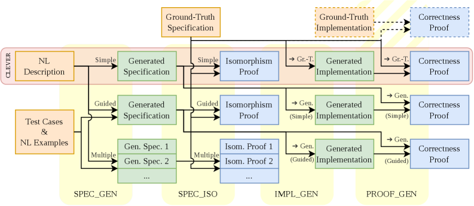
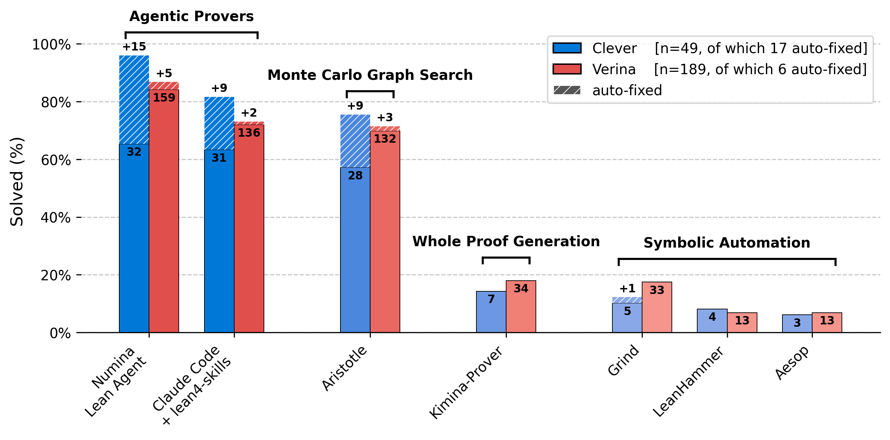

Evaluates an agentic prover on CLEVER, a Lean 4 benchmark for verifiable code generation and specification.
Abstract
Agentic systems have recently emerged as state-of-the-art approaches for automated theorem proving in formal mathematics. To assess how far these capabilities extend to program verification, we evaluate Claude Code in an agentic proving framework on CLEVER, a Lean 4 benchmark for verifiable code generation. Our results show that Claude generates arguably valid specifications for 98.8% of problems (with 81.3% also accepted by CLEVER's isomorphism-based scoring on the correct portion of the benchmark), certifies implementations against correct ground-truth specifications for 87.5% of problems, and reaches a 98.1% success rate on the end-to-end program generation and verification pipeline over entries with self-consistent premises. Across all stages, Claude further provides high-quality feedback on its own attempts (as confirmed under manual review), identifying underlying causes of failure and lingering bugs in the dataset. These findings highlight a growing mismatch between the difficulty of existing program verification benchmarks and the capabilities of modern agentic provers, and point to the need for more rigorous, bug-resilient evaluation methodologies, and in particular for alternatives to isomorphism-based scoring of generated specifications. More broadly, our results provide empirical evidence that tight compiler-in-the-loop agentic paradigms are currently the most effective approach for foundational program verification.
Problem
Agentic LLM systems have shown strong results in automated theorem proving for pure mathematics, but their effectiveness for program verification with formal specifications, implementations, and correctness proofs was not well characterized.
Approach
The authors evaluate Claude Code in an agentic proving framework on CLEVER, a Lean 4 benchmark for verifiable code generation. The pipeline covers four tasks: specification generation, specification isomorphism checking, implementation generation, and proof generation. Claude operates in a compiler-in-the-loop setting where it iteratively generates and refines proofs against the Lean type-checker.

Figure 1: Schematic overview of our experimental pipeline. The four generation and proof tasks are identified in yellow: Clever ’s original intended setup spans horizontally in red across the top row, while other pathways represent our custom variations of the setup. The dashed portion in the top-right corner is the preliminary experimentation setup of Appendix A .
Results
Claude generates valid specifications for 98.8% of problems (81.3% also pass isomorphism scoring on the correct benchmark portion), certifies implementations against correct ground-truth specifications for 87.5% of problems, and achieves 98.1% end-to-end success on entries with self-consistent premises. The work also identifies numerous bugs in the benchmark itself.

Figure 4: Overview of prover performance on the Clever and Verina benchmarks. Solid bars indicate the number of tests solved on the verified-correct portions of each dataset, while the patterned bar segments above show additional solved instances obtained after correcting erroneous benchmark entries. Numbers annotated with a ‘+’ denote the corresponding count of these additional solves.